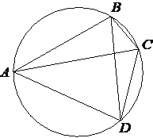

Авторский разбор и аудит предварительны; внешней экспертизы нет.
Модель автора: claude-opus-5-5 (opus; effort=low); в основных частотах: True ·
Впишите правильный ответ.
| Четырёхугольник вписан в окружность. Угол равен угол равен Найдите угол Ответ дайте в градусах. |  |
КЭС: 7.1 Фигуры на плоскости
61
| ID / вход | Действие | Результат | Локальные KC |
|---|---|---|---|
| s1 · condition | Угол DBC и угол CAD вписанные и опираются на одну дугу CD, поэтому равны | ∠DBC = ∠CAD = 42° | kc1 |
| s2 · condition, s1 | Луч BD лежит внутри угла ABC (по рисунку), поэтому ∠ABD = ∠ABC − ∠DBC | ∠ABD = 103° − 42° = 61° | kc2 |
[
{
"id": "m1",
"name": "Перенос угла через вписанные углы на одну дугу и вычитание",
"step_ids": [
"s1",
"s2"
]
}
]Вход: два вписанных угла окружности, опирающиеся на одну и ту же дугу (вершины по одну сторону от хорды). Операция: заключить их равенство и перенести известную величину.
{
"local_kc_id": "kc1",
"status": "new_candidate",
"catalog_kc_id": null,
"evidence": [
{
"ref": "step:s1:action",
"quote": "Угол DBC и угол CAD вписанные и опираются на одну дугу CD, поэтому равны"
},
{
"ref": "step:s1:result",
"quote": "∠DBC = ∠CAD = 42°"
},
{
"ref": "image:assets/84bcfbf410ddd1e2f417e82c.png",
"region_description": "Точки A (слева), B (сверху), C (справа), D (снизу справа) на окружности; хорды AC и BD проведены, вершины A и B лежат по одну сторону от хорды CD"
}
],
"context_refs": [
"condition",
"image:assets/84bcfbf410ddd1e2f417e82c.png"
],
"alternatives_checked": [
{
"catalog_kc_id": "diameter_angle",
"reason": "Касается только прямого угла, опирающегося на диаметр; здесь дуга CD произвольная"
},
{
"catalog_kc_id": "literal_f5a787e19d0e",
"reason": "Сумма углов треугольника и смежность, а не свойство вписанных углов"
},
{
"catalog_kc_id": "isosceles_angles",
"reason": "Равенство углов из равенства сторон, не из общей дуги"
}
],
"rationale": "Действие: установить равенство двух вписанных углов, опирающихся на одну дугу CD с вершинами по одну сторону хорды, и перенести величину 42°. В каталоге нет общего узла о вписанных углах; diameter_angle — лишь частный случай.",
"proposal": {
"name": "Приравнивать вписанные углы, опирающиеся на одну дугу",
"definition": "Для двух вписанных углов с вершинами на окружности по одну сторону от общей хорды заключить их равенство (половина общей дуги); для вершин по разные стороны углы дополняют друг друга до 180°, это отдельный случай."
},
"blocking": false,
"issue_ids": []
}Вход: угол, разбитый внутренним лучом на два угла, известны целый угол и одна часть. Операция: вычесть известную часть из целого. Граница: луч должен лежать внутри угла.
{
"local_kc_id": "kc2",
"status": "match",
"catalog_kc_id": "literal_adbf18f11761",
"evidence": [
{
"ref": "step:s2:action",
"quote": "Луч BD лежит внутри угла ABC (по рисунку), поэтому ∠ABD = ∠ABC − ∠DBC"
},
{
"ref": "step:s2:result",
"quote": "∠ABD = 103° − 42° = 61°"
},
{
"ref": "image:assets/84bcfbf410ddd1e2f417e82c.png",
"region_description": "Из вершины B выходят лучи BA, BD, BC; луч BD расположен между BA и BC"
}
],
"context_refs": [
"condition",
"step:s1:result",
"image:assets/84bcfbf410ddd1e2f417e82c.png"
],
"alternatives_checked": [
{
"catalog_kc_id": "literal_f5a787e19d0e",
"reason": "Сумма углов треугольника/смежность не используются; здесь вычитание углов с общей стороной BC"
}
],
"rationale": "Сопоставлено положение лучей BA, BD, BC с общей вершиной B и вычтен известный угол DBC из ABC — совпадает с определением целиком. Положение луча обосновано рисунком (вписанный четырёхугольник ABCD с порядком вершин также это подтверждает).",
"proposal": null,
"blocking": false,
"issue_ids": []
}[ "Положение луча BD внутри угла ABC взято с рисунка." ]
[]
{
"author_path": "data/annotation/runs/2026-11-09-fipi-team-bogdan108-next-100/raw/author/C7D60A.json",
"auditor_path": "data/annotation/runs/2026-11-09-fipi-team-bogdan108-next-100/raw/auditor/C7D60A.json",
"accepted_after_review": null
}